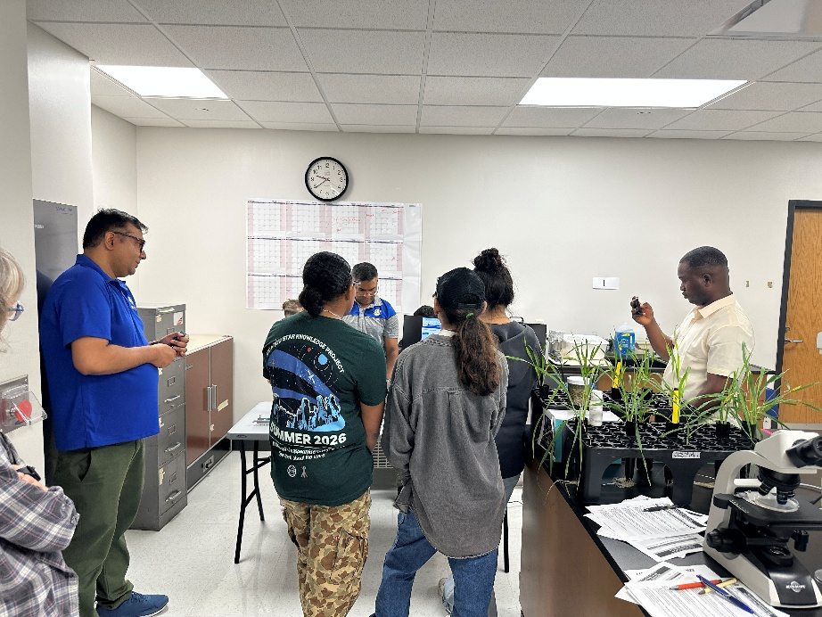
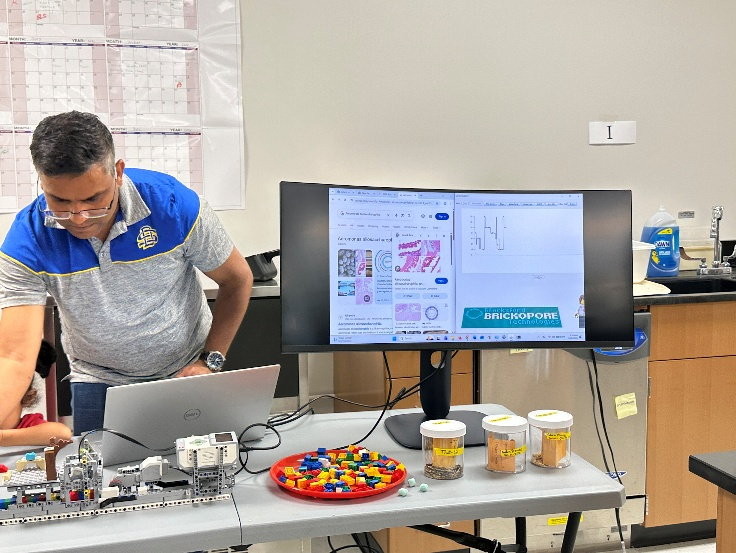
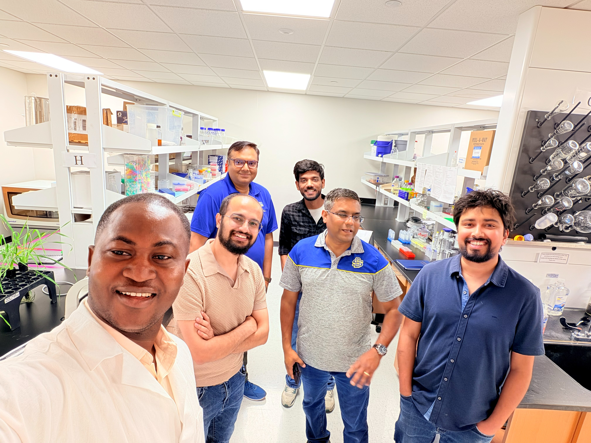
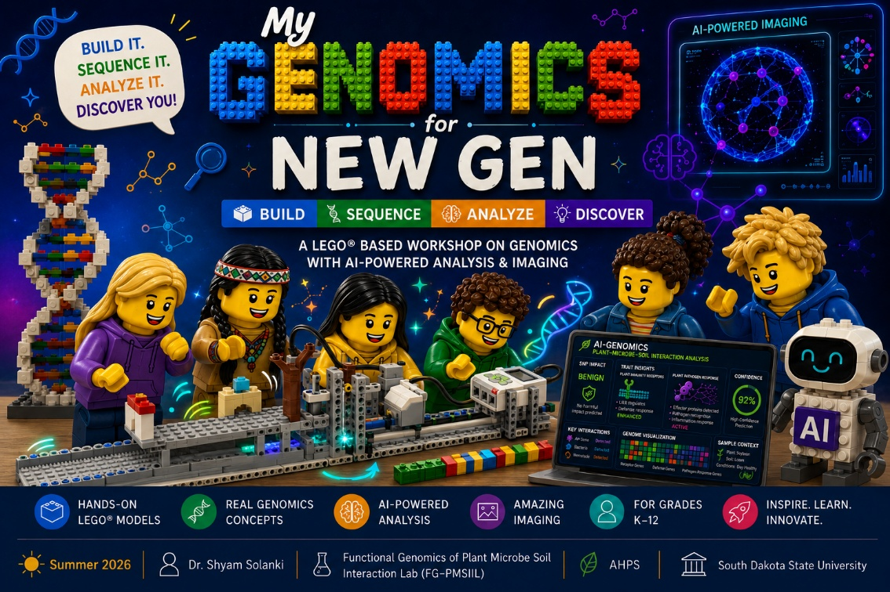
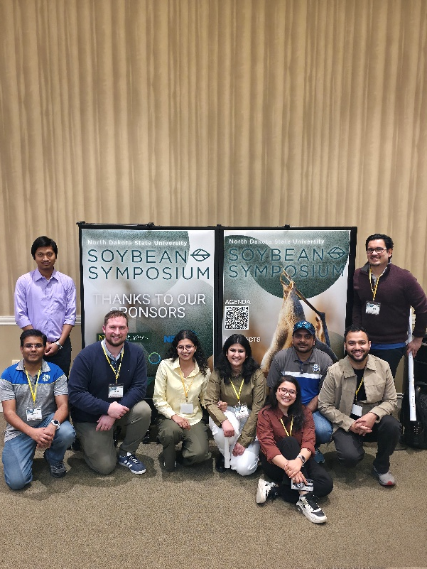
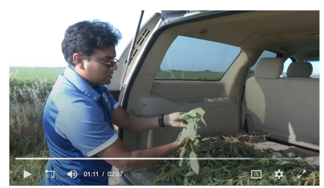
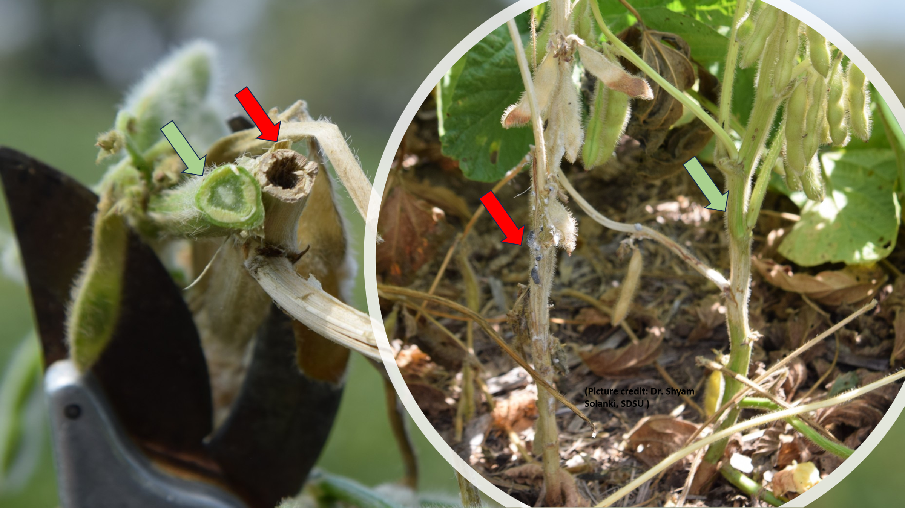
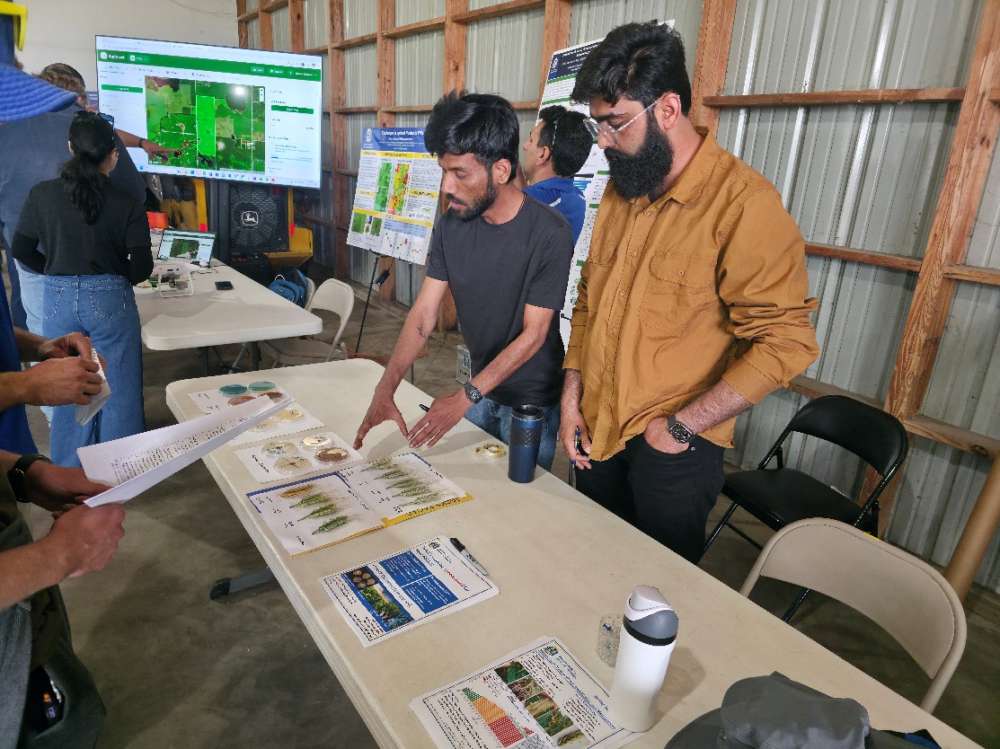

OUTREACH & ENGAGEMENT
Science grows
through connection.
Genomics education, field engagement, and industry partnerships connect molecular discovery with communities and crop health.
01 / GENOMICS EDUCATION
GeN-G
Genomics for NewGen
A hands-on outreach program introducing students to genomics, DNA sequencing, and plant health through interactive activities, including the Brickopore LEGO DNA sequencer. Developed in collaboration with Dr. Richard Leggett, Earlham Institute, UK.
Explore Brickopore ↗



EXPANDING ACCESS
GeN-G BRING
Our GeN-G BRING program expands hands-on genomics education to rural and Native communities, connecting students with sequencing, plant science, and emerging technologies while strengthening links between communities and research institutions.
02 / FIELD CONTACT
Across South Dakota.
Our field outreach focuses on soybean disease surveys, corn microbiome research, and crop health across South Dakota. We regularly visit fields, collect samples, and meet directly with farmers and stakeholders across the state to connect laboratory research with real-world production challenges.




03 / INDUSTRY PARTNERSHIPS
Solutions shaped
by farmer needs.
We work with local industry partners to develop practical formulations aligned with farmer needs, particularly from our research in microbiome genomics, biostimulants, and biological control. The goal is to translate laboratory discoveries into field-ready crop health solutions.
Explore biostimulants and biocontrol ↗